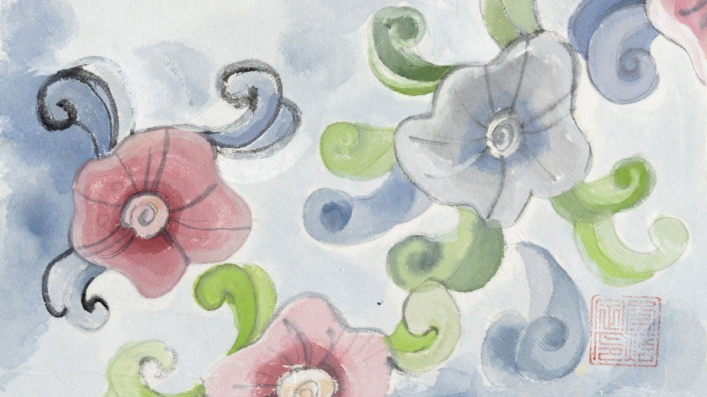
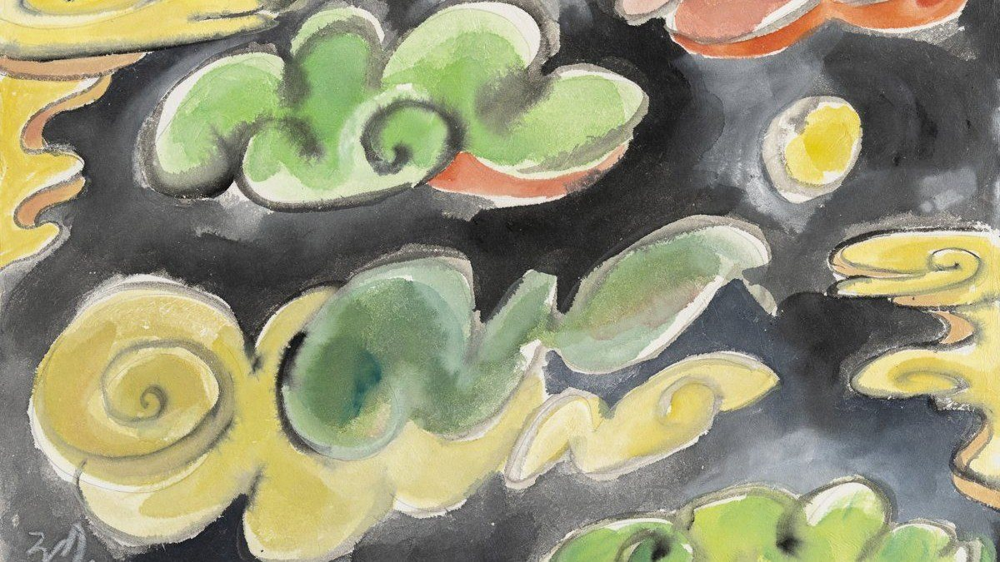
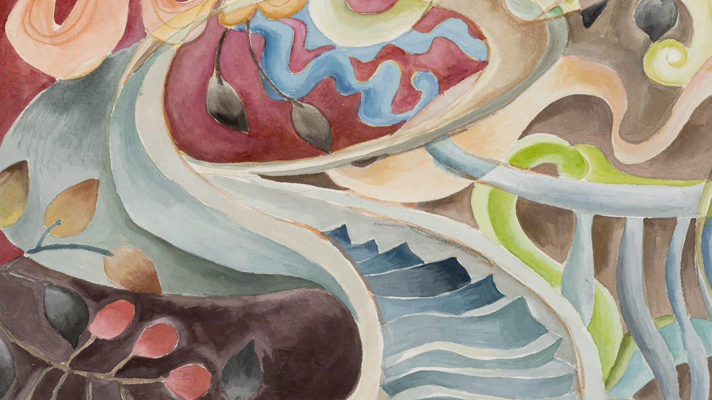
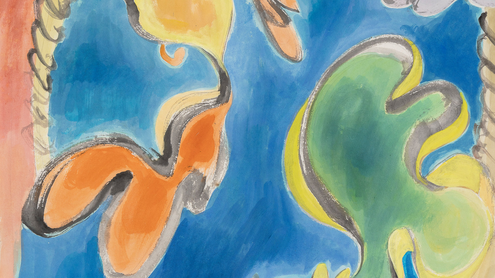
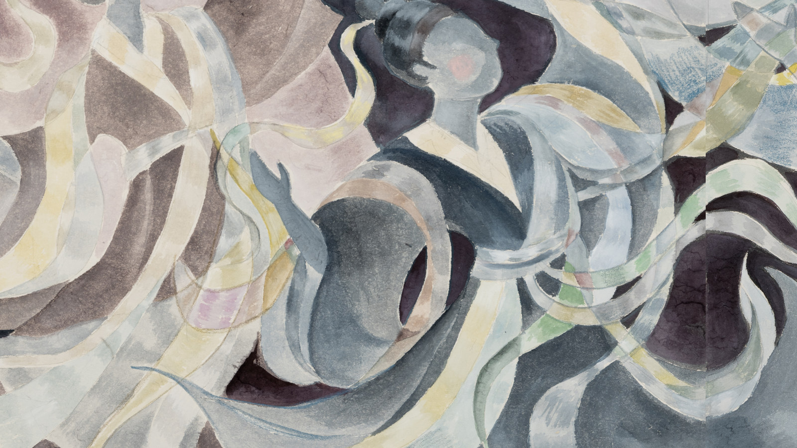
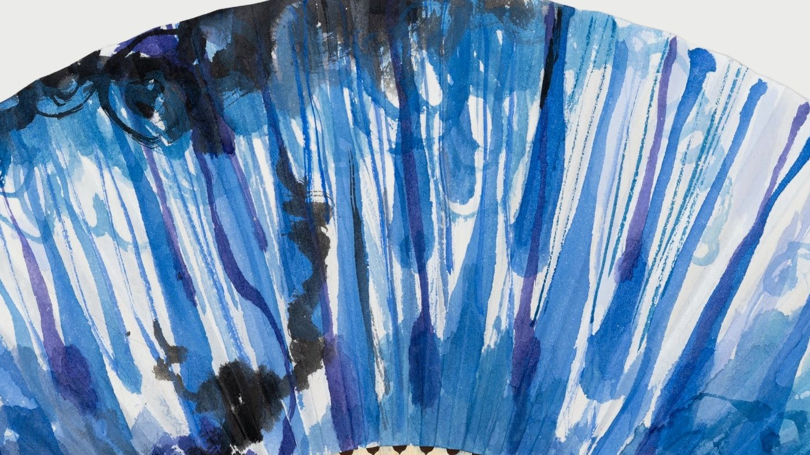

Process작업 과정
From Thought to Material, Line, and Color사상이 재료와 선과 색이 되기까지
My work begins with a single question: how does the invisible become visible?
나의 작업은 하나의 물음에서 출발한다. 보이지 않는 것은 어떻게 보이는 것이 되는가.
Classical East Asian painting theory named giun saengdong (氣韻生動), the living movement of spirit, as the first virtue of a painting. It means that capturing the vital energy flowing within a form matters more than reproducing its likeness. I believe the path to bringing that energy onto the surface lies in how I meet my materials, how I draw a line, and how I build color over time. For me, hanji, ink, and jinchae are not merely tools; they are where thought takes on a body.
동양의 옛 화론은 그림의 첫째 덕목을 기운생동(氣韻生動), 곧 살아 움직이는 기운이라 했다. 형태를 닮게 그리기보다 그 안을 흐르는 생명의 기운을 붙잡는 것이 먼저라는 뜻이다. 나는 그 기운을 화면에 옮기는 길이 재료를 대하는 태도, 선을 긋는 방식, 색을 쌓는 시간 속에 있다고 믿는다. 그래서 내게 한지와 먹과 진채는 단지 도구가 아니라, 사상이 몸을 입는 자리다.

Hanji한지
A Ground Made by Leaning on One Another서로 기대어 이루어지는 바탕
Hanji is paper made by dispersing the fibers of mulberry bark in water and lifting them onto a screen. Joining three thin sheets of hanji one at a time, letting each dry before adding the next, until they become a single sheet of mounted hanji (baejeop, 褙接), takes several days. This work belongs to a mounting craftsman whose hands have been trained over many years. Thin paper that would easily tear on its own becomes, layered and joined, a firm ground able to bear brush, water, and color. So my painting has already begun before my brush ever touches it. Within it are the soil that grew the mulberry, the hands that formed the paper, days of waiting, and the care of the craftsman.
Because the fibers of hanji are interwoven, water and ink placed on it never follow a fixed path. They spread along the grain of the fibers, the moisture of the paper, the air of that particular day. Each bloom of ink is made together by my brush, the fibers of the paper, water, and time. Before this paper, I learn that nothing exists on its own. Because this exists, that exists; and as that arises, it comes forth as this. It is often said that a stroke on hanji has only one chance, but I do not throw paper away lightly. I cannot discard, for the sake of a single line, a sheet that holds the soil, the hands, and days of care. Just as the same bloom never comes twice, a stray line is not fixed where it falls. For me, hanji is not a single chance but a field that offers many chances, a presence that paints alongside me.
한지는 닥나무 껍질의 섬유를 물에 풀어 떠낸 종이다. 얇은 한지 세 장을 한 장씩 붙이고 말리기를 거듭해 하나의 배접 한지로 완성하는 데에는 며칠이 걸린다. 이 일은 오랜 세월 손을 익힌 표구 장인의 몫이다. 홀로는 쉽게 찢어지는 얇은 종이가 서로 겹쳐 붙으며 비로소 붓과 물과 색을 견디는 단단한 바탕이 된다. 그래서 내 그림은 내 붓이 닿기 전부터 이미 시작되어 있다. 그 안에는 닥나무를 키운 땅과 종이를 뜬 손, 며칠의 기다림과 장인의 정성이 함께 스며 있다.
한지의 섬유는 서로 얽혀 있어서, 그 위에 놓인 물과 먹은 정해진 길로 가지 않는다. 섬유의 결을 따라, 종이의 습도를 따라, 그날의 공기를 따라 번진다. 하나의 번짐은 나의 붓과 종이의 섬유와 물과 시간이 함께 만들어낸 것이다. 나는 이 종이 앞에서 어떤 것도 홀로 존재하지 않는다는 것을 배운다. 이것이 있어 저것이 있고, 저것이 일어나 이것으로 발현한다. 흔히 한지 위의 획은 단 한 번으로 끝난다고들 하지만, 나는 종이를 함부로 버리지 않는다. 땅과 손과 며칠의 정성이 스민 종이를 선 하나 때문에 버릴 수는 없다. 같은 번짐이 두 번 오지 않듯, 어긋난 선도 그 자리에 굳어 있지 않다. 나에게 한지는 단 한 번의 기회가 아니라 많은 기회를 주는 장(場)이며, 나와 함께 그리는 존재다.

Ink먹
The Tones of Non-Action (無爲)무위(無爲)의 농담
Ink is a single black, yet when it meets water it divides into countless layers. From dense dark ink to the palest wash, ink moves between night and dawn, mountain and mist, by the amount of water alone. Laozi said that by not forcing, nothing is left undone (無爲而無不爲). The spreading of ink lies in a realm I can never fully control. I can choose the direction the ink will travel, but not where it ends. So rather than pushing the brush, I open a path for the ink to find its own way. At the boundary where intention meets chance, a naturalness arises that the human hand alone could never make. Ink teaches me to complete a work through not-doing.
먹은 하나의 검정이지만 물과 만나면 수없이 많은 층으로 나뉜다. 짙은 농묵에서 엷은 담묵까지, 먹은 물의 양만으로 밤과 새벽, 산과 안개를 오간다. 노자는 억지로 하지 않음으로써 이루지 못함이 없다(無爲而無不爲)고 했다. 먹의 번짐은 내가 온전히 통제할 수 없는 영역이다. 나는 먹이 갈 방향은 정할 수 있지만 그 끝은 정할 수 없다. 그래서 붓을 밀어붙이기보다 먹이 스스로 갈 길을 열어준다. 의도와 우연이 만나는 그 경계에서 사람의 손만으로는 만들 수 없는 자연스러움이 생겨난다. 먹은 내게 '하지 않음'으로 완성하는 법을 가르친다.

Line선
Straightness Within the Curve굽음 속의 곧음
My lines are almost always curves, but not simply for the sake of softness. Laozi said, "The greatest straightness seems bent (大直若屈)." The curves of nature do not bend because they are weak; they bend in the way that endures longest. A river reaches the sea because it flows around rocks; a tree does not break because it bends in the wind. Within the curve lie the wisdom and dignity with which life has protected itself.
I draw with jungbong (中鋒), holding the brush tip upright at the center of the stroke, so that even as a curve thins and swells, its center never collapses. I try to draw each stroke unbroken, within a single breath. Because the speed of a stroke and the pressure of the brush are the state of my heart in that moment, the stillness before a line matters as much as the line itself. Still, a line sometimes takes an unexpected shape. Then I do not erase it; I change what surrounds it, add another line beside it, or lay color over it to change the atmosphere of the whole surface. The line I thought was a mistake soon becomes a new path for the painting to follow. To embrace even what goes astray and let it flow: this is another wisdom I have learned from the curve.
나의 선은 대부분 곡선이다. 하지만 그것은 부드러움만을 위한 선택이 아니다. 노자는 "크게 곧은 것은 굽은 듯하다(大直若屈)"고 했다. 자연의 곡선은 약해서 휘는 것이 아니라, 가장 오래 견디는 방식으로 휘어 있다. 강물은 바위를 돌아 흐르기에 끝내 바다에 이르고, 나무는 바람에 휘기에 꺾이지 않는다. 곡선 안에는 생명이 스스로를 지켜온 지혜와 존엄이 담겨 있다.
나는 붓끝을 획의 한가운데 세우는 중봉(中鋒)으로 선을 긋는다. 붓을 세우면 곡선이 가늘어지고 굵어지는 가운데에도 중심이 무너지지 않는다. 한 획은 되도록 끊지 않고 한 호흡 안에 긋는다. 획의 속도와 붓을 누르는 힘이 곧 그 순간의 마음이기에, 선 하나를 긋기 전의 고요가 선만큼 중요하다. 그래도 선이 뜻밖의 모양으로 그어질 때가 있다. 그럴 때 나는 그 선을 지우지 않고, 둘레를 바꾸거나, 곁에 다른 선을 더하거나, 그 위에 색을 입혀 화면 전체의 분위기를 바꾼다. 그러면 실수라고 여긴 선은 어느새 그림이 가야 할 새로운 길이 된다. 어긋남마저 품어 흐르게 하는 것, 그것이 내가 곡선에서 배운 또 하나의 지혜다.

Color색
Harmony Without Sameness (和而不同)어울리되 같아지지 않는 것(和而不同)
I have no favorite color. Every color carries its own nature and story, and no color is more precious than another. Confucius said that the noble person seeks harmony but not sameness (和而不同). When red is placed beside blue, the two do not blend into one, yet each makes the other clearer. Just as the nameless wildflower by the road and the moss in a crack of rock are each dignified for their own reasons, the colors on my surface keep their own stories, reflect one another, and together adorn the whole painting.
This is why I use jinchae (眞彩). Jinchae does not thin color away; it lays color down deep and saturated, preserving each color's own nature. I use both tube paints and dish paints. Tube paint sets the density of color directly on the surface, while dish paint changes with the water I dissolve it in, moving from a faint breath to a deep resonance. That two materials of different natures meet on one surface is itself harmony without sameness. I believe true harmony becomes possible only when each color speaks fully in its own voice, and within that harmony every color becomes dignified.
나에게는 특별히 아끼는 색이 없다. 모든 색은 저마다의 성질과 이야기를 지니고 있고, 어느 색도 다른 색보다 귀하지 않다. 공자는 군자는 어울리되 같아지지 않는다(和而不同)고 했다. 붉은색이 푸른색 곁에 놓일 때, 둘은 섞여 하나가 되지 않으면서도 서로를 더 분명하게 해준다. 길가의 이름 모를 풀꽃도, 바위틈의 이끼도 저마다의 이유로 존엄하듯, 내 화면 위의 색들도 제 이야기를 지닌 채 서로를 비추며 하나의 화면을 장엄한다.
내가 진채(眞彩)를 쓰는 이유가 여기에 있다. 진채는 색을 흐리게 덜어내지 않고 짙고 진하게 올려, 저마다의 성질을 본래 그대로 살려내는 채색이다. 나는 튜브 물감과 접시 물감을 함께 쓴다. 튜브 물감은 색의 밀도를 곧바로 화면에 세워주고, 접시 물감은 물로 풀어내는 만큼 농도가 달라져 엷은 숨결에서 짙은 울림까지 오간다. 성질이 다른 두 재료가 한 화면에서 만나는 것 또한 어울리되 같아지지 않는 일이다. 각각의 색이 제 목소리를 온전히 낼 때 비로소 진정한 조화가 가능하고, 그 조화 속에서 모든 색은 존엄해진다고 나는 믿는다.

Layering겹칠
A Depth That Empties as It Builds쌓을수록 비워지는 깊이
There is no set number of layers. Sometimes a single layer is enough; sometimes I lay down countless layers. Usually two or three layers are the foundation, and after that I decide by looking at the painting. When I feel the surface wants a different path, I sometimes cover it entirely with deep color and change its whole atmosphere. It is not I who decide when to stop; the painting tells me. Because color does not sit on top of the paper but seeps into it as it builds, with each added layer the color below glows softly through the one above, and color gains not thickness but depth. As color accumulates, the surface grows not heavier but clearer, and a deep space opens within it where light can dwell. Fullness and emptiness are not opposites; each gives rise to the other. At the far end of filling I meet emptiness, and I, holding the brush, am gradually emptied into that flow as well.
겹칠에는 정해진 횟수가 없다. 한 번으로 끝날 때도 있고, 수없이 올릴 때도 있다. 대개는 두세 번을 기본으로 올리고, 그다음은 그림을 바라보며 정한다. 화면이 다른 길을 원한다고 느낄 때는 진한 색으로 아예 덮어 분위기를 통째로 바꾸기도 한다. 언제 멈출지는 내가 정하는 것이 아니라 그림이 알려준다. 색은 종이 위에 덮이는 것이 아니라 종이 속으로 스며들며 쌓이기에, 겹을 더할수록 아래의 색은 위의 색을 통해 은은히 비치고, 색은 두께가 아니라 깊이를 얻는다. 색을 쌓을수록 화면은 오히려 맑아지고, 그 안에 빛이 머무는 깊은 공간이 열린다. 채움과 비움은 서로 반대가 아니라, 하나가 다른 하나를 낳는다. 채움의 끝에서 나는 비움을 만나고, 붓을 쥔 나 또한 그 흐름 속으로 조금씩 비워진다.

Fans부채
Painting on a Folded Surface굴곡진 종이 위에서
Painting on a fan is a world entirely different from flat hanji. Painters of old usually painted on a fan-shaped sheet and attached the ribs afterward, but I paint on the finished fan itself. Every fold leaves a ridge, and the brush must travel over those rises and falls. When I press the paper as flat as I can and paint on it, the paper sometimes quietly relaxes and opens the moment color is laid on and water seeps in. The painting is made as the paper and I push and pull against each other. So when I paint a fan, I do not cling to order; I paint as the paper allows. On a folded surface the curve bends once more, and in that bending the line of nature I seek to draw comes closer to nature itself.
A fan is not a tool for summer alone but something you can hold in every season, a feeling that belongs uniquely to us. When I want a moment of ease, I spread a fan; when I want to open my heart wide, I open a fan. When I paint on a fan, fold it, and give it to someone, the painting does not hang on a wall; it passes from hand to hand, and my affection and care reach that person's hand directly. Just as Koreans exchange words of blessing, I share fans.
부채 그림은 평평한 한지와 전혀 다른 세계다. 옛사람들은 흔히 부채꼴 종이에 그림을 그린 뒤 살을 붙여 부채를 완성했지만, 나는 다 만들어진 부채 그 자체 위에 그린다. 접힌 자리마다 굴곡이 남아 있고, 붓은 그 오르내림을 지나가야 한다. 종이를 있는 힘껏 반듯하게 펴서 그리면, 색이 입혀지고 물이 스미는 순간 종이가 스르르 펴지기도 한다. 종이와 내가 서로 밀고 당기며 그림이 만들어지는 셈이다. 그래서 부채에 그릴 때 나는 순서에 매달리지 않고, 종이가 허락하는 대로 그린다. 굴곡진 면 위에서 곡선은 한 번 더 휘고, 그 휨 속에서 내가 그리고자 했던 자연의 선은 더 자연에 가까워진다.
부채는 여름 한철의 도구가 아니라 사계절 내내 손에 쥘 수 있는 우리만의 정서다. 삶의 여유를 갖고 싶을 때 부채를 펼치고, 마음을 활짝 펴고 싶을 때 부채를 연다. 부채에 그림을 그려 접어서 누군가에게 건네면, 그 그림은 벽에 걸린 그림과 달리 손에서 손으로 전해진다. 나의 애정과 정성이 그 사람의 손에 곧바로 닿는 것이다. 서로 덕담을 나누듯, 나는 부채를 나눈다.
Technique is the vessel that holds thought, and thought becomes visible only through technique.
기법은 사상을 담는 그릇이고, 사상은 기법을 통해서만 눈에 보이는 것이 된다.
Closing맺음
In the end, my process is a form of practice. From hanji I learn interdependence, from ink non-action, from the curve the straightness within bending. From color I learn harmony without sameness; from layering, the emptiness that comes at the end of accumulation; and from the fan, how to flow with the paper without clinging to order. Technique is the vessel that holds thought, and thought becomes visible only through technique. Wittgenstein wrote that what is mystical is not how the world is, but that it is. What I finally hope to reach is that wonder: that all living things are. I hope each finished painting reaches those who look at it as a living energy.
결국 나의 작업 과정은 하나의 수행이다. 한지에서 인연을 배우고, 먹에서 무위를, 곡선에서 굽음 속의 곧음을 배운다. 색에서는 어울리되 같아지지 않는 법을, 겹칠에서는 쌓음 끝에 오는 비움을, 부채에서는 순서 없이 종이와 함께 흐르는 법을 배운다. 기법은 사상을 담는 그릇이고, 사상은 기법을 통해서만 눈에 보이는 것이 된다. 비트겐슈타인은 신비로운 것은 세계가 어떻게 있는가가 아니라 세계가 있다는 그것이라고 했다. 내가 끝내 닿고 싶은 것도 살아 있는 모든 것이 '있다'는 그 경이다. 그렇게 완성된 한 점의 그림이 바라보는 이에게 살아 있는 기운으로 전해지기를 바란다.
For the artist’s thoughts, see Statement.작가의 생각은 Statement에서